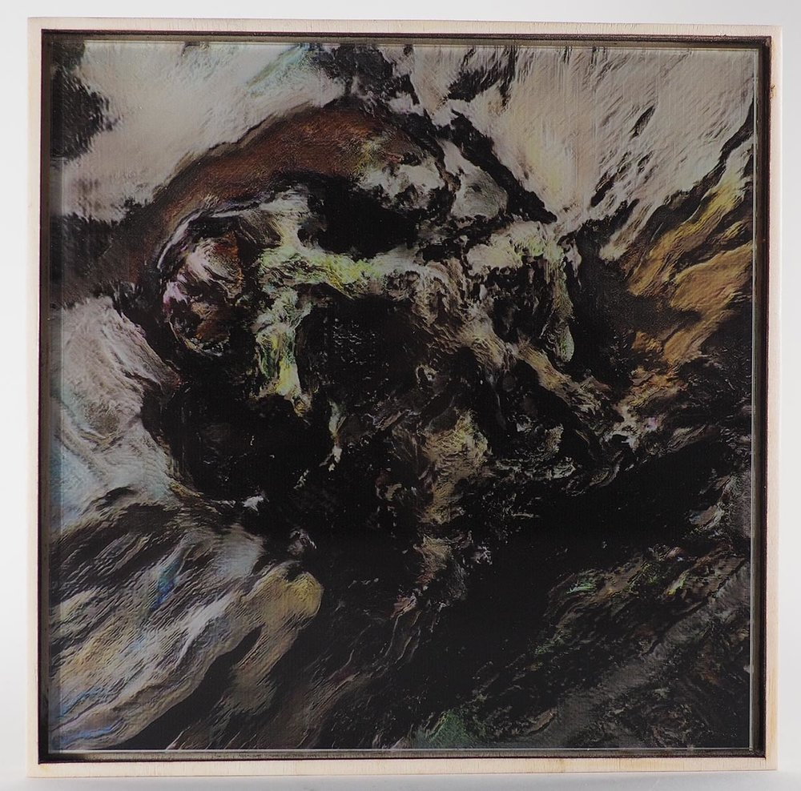

This work was produced in confrontation (and later collaboration) between me and Ronan Barrot; a French painter who I've come to deeply admire over the course of our work together.
Ronan paints scenes and landscapes; but whenever he pauses work on a painting or finishes a painting; he will use the leftover paint on his palette to paint a skull. Because of this; over the past few decades he has created thousands of uniformly sized skull paintings. The resulting work together focused on using scans of these to teach a neural network to create images of paintings of skulls; then Ronan would give feedback (whether it was just his thoughts directly, corrections of different generated skulls, or production of new skulls introduced into the dataset with the intent of "disturbing the machine").
It was not just generating images of skulls with a GAN and hanging them next to Ronan's - there was a real argument and dialogue between me as a new media / AI artist, and Ronan as a very traditional artist; ourselves, our processes, and our ways of working.
The show took place on February 7th, 2019, at L'Avant Galerie Vossen in Paris.
None of this would not have been possible without the help of Caroline Vossen and Albertine Meunier; who introduced me to Ronan in the first place- and continued to help me greatly throughout the collaboration.
Interviews / articles about the show:
Images are below- but first; please view the above links. Our work together was a conversation and not just images alone.
All images may be clicked to enlarge

The "Epoch 2" skulls are approximately 7.9 x 7.9 inches.{kind=link}
{kind=link}
{kind=link}
{kind=link}
{kind=link}
{kind=link}
{kind=link}
{kind=link}
{kind=link}